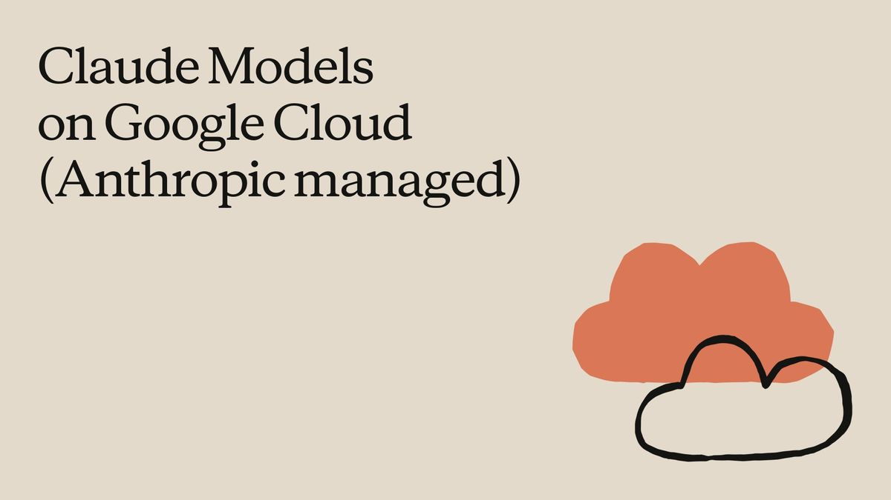
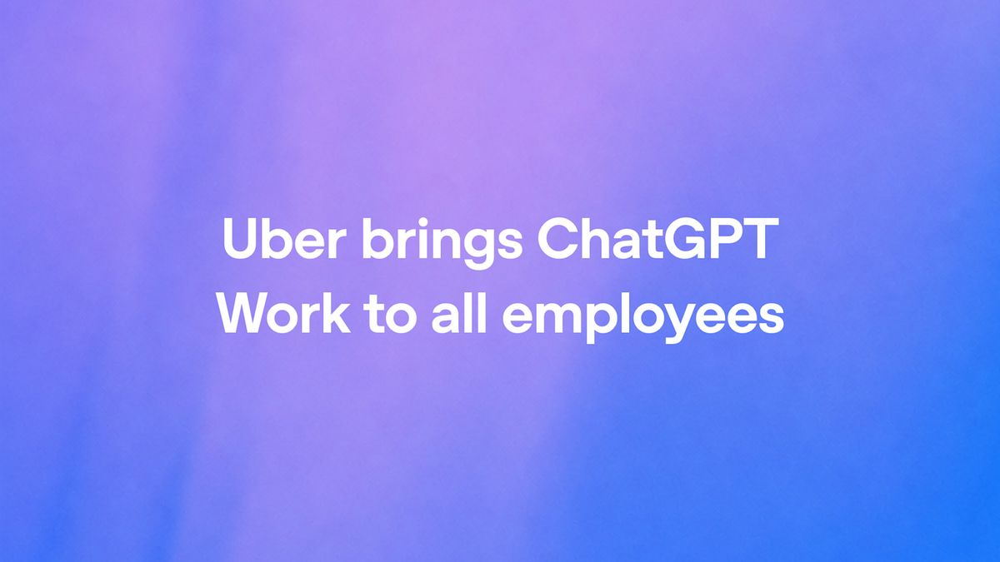
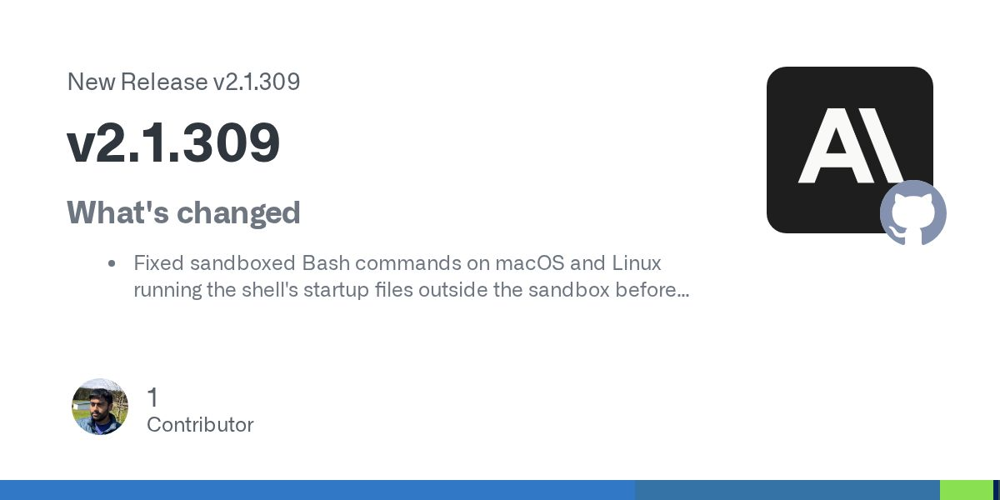
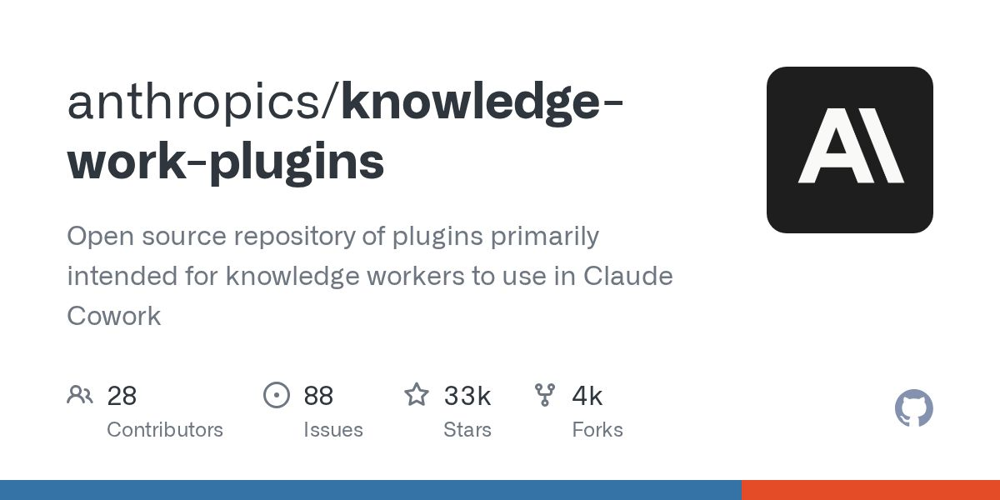

Claude 应用下周起默认开启自动模式。
原文正文要点
覆盖 Pro、Max、Team 套餐的网页、桌面、手机端。不再每一步都问你，改由自动检查拦截有风险的操作，随时可以切回手动。官方推文（10-23 04:04，9885 赞）
时间窗口：10-22 08:00 到 10-23 08:00（台北时间）。每条都读过正文、核对过日期。和 10-22 日报重复的（Claude Duet、OpenAI 上 Google Cloud、CleanYourTV、PHP 漏洞、懂了鸭、小果AI 等）不再收录。
覆盖 Pro、Max、Team 套餐的网页、桌面、手机端。不再每一步都问你，改由自动检查拦截有风险的操作，随时可以切回手动。官方推文（10-23 04:04，9885 赞）
ChatGPT、Cursor、GitHub Copilot、VS Code 都已经支持 Skills。Anthropic 官方（10-22）｜Claude Code 负责人 bcherny 推文｜Simon Willison 点评｜宝玉吐槽 希望 Claude Code 也读 .agents/skills

可以用 Google Cloud 的账号、账单和承诺消费额度。官方推文（10-23 05:21）

用来做调研、数据分析、做 PPT。OpenAI（10-22 08:00，文章页 403，按官方 RSS 摘要核验）
展示了 AI 汇总办公信息的使用方式。AIbase

全是安全和权限修复，包括沙箱里的 Bash 不再在沙箱外跑 shell 启动文件、worktree 隔离补漏、超大嵌套 CLAUDE.md 不再反复压缩上下文。Release（10-23 06:18）
不生成完整回答，只做分类、判断、"下一步做什么"，更快更便宜。适合做客服分流、内容审核这类小工具。OpenAIDevs 推文｜OpenAI（10-23 03:00）

又发了 0.164.0-alpha.12 等几个预发布版本，都没有写更新说明。Releases
V2EX 帖子给了一行自查命令和清理方法，官方 issue 从 6 月开到现在还没修。V2EX（10-22 16:48）
最长 30 秒原生视频直出，最多 10 张关键帧控制。AI工具集 10 月 22 日快讯
能在 M4 Pro MacBook 上每秒跑 125+ token 的本地编程模型（40B 参数，每次只激活 2.5B）。TLDR AI 10-22 期
免费开源，写 Markdown 一键排成 X 长文，代码、表格、Mermaid 图自动转图片。做内容的人用得上。V2EX（10-22 21:46）

Anthropic 开源的 11 个"岗位插件"，给 Claude Cowork 用，覆盖效率、销售等岗位，可接 Slack、Notion、Asana、Microsoft 365 等工具。可供了解 AI 办公插件。
图解加可复制模板的 Claude Code 入门指南。
闪红灯是在干活，常亮红灯是在等你回答，绿灯是空闲。r/ClaudeAI（10-22 17:29）
作者说受安卓电视去广告启发，"把仓库链接丢给 Claude 就行"。r/ClaudeAI（10-22 19:00）
备课、批改、做 PPT、分析成绩。非技术用户视角。r/ClaudeAI（10-23 02:55）
让 AI 每次回答先说"你描述的东西，行业标准叫法是……"，用来顺便学术语、提高提示词水平。r/ClaudeAI（10-23 06:41）
有人在 28 个真实任务上测了 6 种搭配，只用 Haiku 5.5 全部通过，成本比 Sonnet 低 93%；把活外包给更便宜的模型反而更贵。r/ClaudeAI（10-22 23:25）
网页小游戏，国内外都在自传播。推文（10-22 13:03）
各行各业小技巧，每条带测验或交互动画。推文（10-23 00:17）
在任何有记忆的 Agent 里都能用。即刻（10-22 20:14）
作者不是科班开发，用 Claude Code 做了 Expo App、Supabase、Stripe Connect 和收银机对接，帮餐厅绕开 DoorDash 25–30% 抽成。第一家已上线付费。他说最难的不是写代码，而是拿着手机进店给老板看他自家的菜单。r/ClaudeAI（10-22 23:46）
表格整理、办公自动化脚本、网页小修改，按结果验收。服务内容涉及日常办公与网页维护。电鸭（10-22 21:01）
LangChain 定制 Agent 和工作流、RAG 知识库和企业 AI 落地，列出了相关服务范围。LangChain Agent 服务｜AI 应用全栈服务
上传员工手册和制度，生成内部问答助手，场景是 HR 和客服反复回答同类问题。电鸭（10-22 14:09）
时薪 25–45 元，"在 AI 协助下能英文工作"即可。电鸭（10-23 02:45）

旧 Kindle 改天气钟、Claude Code 状态灯、少数派：把 Muse 装进 ESP-Mosaico 开发板（原文 10-08 写的，10-22 被少数派首页推荐，只能当辅助素材）

Cursor Changelog（最新 10-16）、Google AI Blog（最新 10-21 12:00）、阮一峰周刊（最新 10-16，今天周五可能稍后更新）
r/vibecoding（RSS 返回空）、hnrss 的 AI 关键词 feed（502，改用 HN 高分帖 feed）、OpenAI 文章页（403，按 RSS 和官方推文核验）
Product Hunt（窗口内只有 Resend Inboxes、Agentic CleanSlop、Tetriz 等开发者工具，没收录）、HN（AI 相关只有 NVIDIA OpenShell，偏企业）、量子位（3 篇都与初学者阅读方向关联较弱）、少数派（派早报已覆盖）、Ben's Bites（内容和昨天重复，主要是 Duet 和 PHP）、V2EX 热议（今天热帖和 AI 无关）、Indie Hackers 首页（没有显示日期）
机器之心、The Rundown（邮件订阅）、HF Papers
掘金 AI 热榜、今日热榜、36氪、smol.ai 等